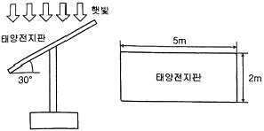
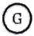
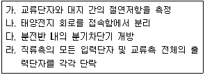

신재생에너지발전설비기사 (2020-09-26 기출문제)
1과목: 태양광발전 기획
1. 전기공사업법령에 따른 전기공사의 종류가 아닌 것은?
- 도로, 공항 및 항만 전기설비공사
- 발전⋅송전⋅변전 및 배전 설비공사
- 전기철도 및 철도신호 전기설비공사
- 저수지, 수로 및 이에 수반되는 구조물의 공사
(정답률: 92%)

2. 태양광발전용 인버터의 회로방식에서 낙뢰에 대한 노이즈 방지대책 특성이 우수한 방식은?
- 무변압기 방식
- 고주파 변압기 절연방식
- 상용주파 변압기 절연방식
- 전자기파 변압기 절연방식
(정답률: 75%)
3. 신⋅재생에너지 설비의 지원 등에 관한 규정에 따라 융⋅복합지원사업을 제외한 신⋅재생에너지설비의 하자이행보증기간의 연결로 옳은 것은?
- 풍력발전설비 - 4년
- 소수력발전설비 - 2년
- 태양광발전설비 - 3년
- 태양열발전설비 - 4년
(정답률: 83%)
4. 신에너지 및 재생에너지 개발⋅이용⋅보급 촉진법령에 따라 조성된 사업비를 사용할 수 있는 사업이 아닌 것은?
- 신⋅재생에너지 공급의무화 지원
- 신⋅재생에너지 이용의무화 지원
- 신⋅재생에너지 설비 설치기업의 지원
- 신⋅재생에너지 설비 및 그 부품의 특성화 지원
(정답률: 65%)
5. 계통연계형 태양광발전용 인버터가 계통의 제한된 전압손실 또는 전압강하 기간 동안 연결된 부하에 전력을 계속 생산할 수 있는 인버터의 기능은 무엇인가?
- MPRT 기능
- LVRT 기능
- 단독운전 방지기능
- 자동운전⋅정지 기능
(정답률: 70%)
6. 전기사업법령에 따라 대통령령으로 정하는 구역전기사업자의 발전설비용량 최대 규모는?
- 1만킬로와트
- 1만8천킬로와트
- 3만5천킬로와트
- 5만킬로와트
(정답률: 74%)
7. 태양전지의 효율을 나타내는 식으로 옳은 것은?
- (출력 전기에너지/입사 태양광에너지)×100
- (인버터 출력 전기에너지/인버터 입력 전기에너지)×100
- (출력 전기에너지/출력 태양광에너지)×100
- (입사 태양광에너지/태양 발생에너지)×100
(정답률: 80%)
8. 전기공사업법령에 따라 시⋅도지사가 공사업자의 등록을 반드시 취소해야 하는 사항으로 틀린 것은?
- 거짓이나 그 밖의 부정한 방법으로 공사업의 등록을 한 경우
- 정당한 사유 없이 도급받은 전기공사를 시공하지 아니한 경우
- 영업정지처분기간에 영업을 하거나 최근 5년간 3회 이상 영업정지처분을 받은 경우
- 공사업의 등록을 한 후 1년 이내에 영업을 시작하지 아니하거나 계속하여 1년 이상 공사업을 휴업한 경우
(정답률: 66%)
9. 태양광발전시스템 설치공사 착수 전에 행하는 사전조사 중 현장여건 조사에 해당하지 않는 것은?
- 설치현장 주변에 하수처리 시설의 유무 등을 조사한다.
- 설치현장 주변 장애물에 의한 음영발생 유무 등을 조사한다.
- 설치현장에서 모듈의 설치 최적 방위각 및 경사각을 조사한다.
- 모듈 설치 시 구조적 안정성 확보를 위한 설치현장의 지반특성을 조사한다.
(정답률: 82%)
10. 연간 총 일사량이 5509600 MJ/m2⋅year이라면 평균 일간 일사량은 약 몇 kWh/m2⋅day인가?
- 4.19
- 15.09
- 1509.4
- 4193
(정답률: 53%)
11. 그림은 태양광발전설비와 태양전지판의 크기를 나타낸 것이다. 햇빛이 지표면에 수직으로 입사할 때 1m2의 지표면에서 단위 시간당 받는 빛에너지가 1000W이고 태양전지의 변환효율이 15% 일 때, 이 태양광발전설비가 2시간 동안 생산하는 전력량은 몇 Wh 인가? (단, 햇빛은 2시간 내내 동일하게 지면에 수직으로 입사하며, 태양전지 표면에서 빛의 반사는 일어나지 않는다.)

- 1000√3
- 1500
- 1500√3
- 3000
(정답률: 75%)
12. 신에너지 및 재생에너지 개발⋅이용⋅보급 촉진법령에 따른 신⋅재생에너지 설비에 대한 설명으로 틀린 것은?
- 수력 설비는 물의 표층의 열을 변환시켜 에너지를 생산하는 설비이다.
- 폐기물에너지 설비는 폐기물을 변환시켜 연료 및 에너지를 생산하는 설비이다.
- 수소에너지 설비는 물이나 그 밖에 연료를 변환시켜 수소를 생산하거나 이용하는 설비이다.
- 해양에너지 설비는 해양의 조수, 파도, 해류, 온도차 등을 변환시켜 전기 또는 열을 생산하는 설비이다.
(정답률: 78%)
13. 전기사업법령에 따라 3000kW 초과의 발전사업을 하기 위한 전기(발전)사업 허가권자는? (단, 제주특별자치도는 예외로 한다.)
- 국무총리
- 시⋅도지사
- 한국전력공사장
- 산업통상자원부장관
(정답률: 82%)
14. 전기사업법령에 명시된 전기신사업의 종류로 옳은 것은?
- 핵융합발전사업
- 전기자동차충전사업
- 대규모전력중개사업
- 신재생에너지발전사업
(정답률: 68%)
15. 전기사업법령에 따라 산업통상자원부장관이 전기의 보편적 공급의 구체적 내용을 정할 때 고려하는 사항으로 틀린 것은?
- 사회복진의 증진
- 전기의 보급 정도
- 공공의 이익과 안전
- 의무이행 관련 정보의 수집
(정답률: 70%)
16. 태양광발전의 경제성을 분석하는 일반적인 방법으로 틀린 것은?
- 감가상각법
- 내부수익률법
- 순현재가치법
- 비용⋅편익분석
(정답률: 77%)
17. 에너지저장시스템(ESS)에서 발전량과 부하간의 균형을 맞추기 위한 Grid support 용도와 피크전력대응을 위한 대책은 무엇인가?
- Load leveling
- Power backup
- Power management
- Battery management
(정답률: 68%)
18. 일부 태양전지에 그늘이 발생하면 그 부분의 태양전지로 인한 역전압 바이어스가 걸리기 때문에 열점 현상이 발생하거나 또는 열점으로 인한 손상이 발생하지 않도록 전류가 우회하여 흐를 수 있도록 하는 것은?
- 차단기
- 피뢰기
- 역류방지 다이오드
- 바이패스 다이오드
(정답률: 79%)
19. 국토의 계획 및 이용에 관한 법령에 따라 개발행위 허가신청서 작성 시 신청내용에 해당하지 않는 것은?
- 토지분할
- 기초변경
- 물건적치
- 토지형질변경
(정답률: 52%)
20. 신에너지 및 재생에너지 개발⋅이용⋅보급 촉진법령에 따른 2020년 이후 신⋅재생에너지의 공급의무 비율(%)은?
- 21
- 24
- 30
- 37
(정답률: 74%)
2과목: 태양광발전 설계
21. 전력시설물 공사감리업무 수행지침에 따른 비상주감리원의 근무수칙으로 틀린 것은?
- 설계도서 등의 검토
- 중요한 설계변경에 대한 기술검토
- 설계변경 및 계약금액 조정의 심사
- 입찰참가자격심사(PQ) 기준 작성(필요한 경우)
(정답률: 65%)
22. 얕은기초와 현장시험에 의한 지지력 산정 시 기초의 허용지지력을 추정할 수 있으며, 다른 종류의 현장시험이 어려운 모래, 자갈, 풍화토, 풍화암 등에 적용할 수 있는 시험은?
- 콘관입시험
- 현장베인시험
- 공내재하시험
- 표준관입시험
(정답률: 56%)
23. 태양광발전 어레이용 가대의 구조설계 시 적용되는 상정하중의 분류 중 수평하중에 속하는 것은?
- 풍하중
- 활하중
- 고정하중
- 적설하중
(정답률: 74%)
24. 전력기술관리법령에 따라 산업통상자원부장관이 전력기술의 연구⋅개발을 촉진하고 그 성과를 효율적으로 이용하기 위하여 수립하는 전력기술진흥기본계획에 포함되는 사항이 아닌 것은?
- 새로운 전력기술의 채택에 관한 사항
- 전력기술 진흥의 기본 목표 및 그 추진 방향
- 전력기술의 진흥을 위한 자금 지원에 관한 사항
- 신⋅재생에너지의 기술개발 및 이용⋅보급에 관한 중요 사항
(정답률: 46%)
25. 현장에 설치된 태양광발전시스템에서 외기온도 37℃일 때 다음 모듈의 셀 표면 온도는? (단, 패널 표면의 일사량은 1000Wm2이며, NOCT는 45℃이다.)
- 66.25℃
- 67.25℃
- 68.25℃
- 69.25℃
(정답률: 55%)
26. 설계도면 작성 시 정류기의 전기도면 기호로 옳은 것은?

(정답률: 77%)
27. 신재생발전기 계통연계기준에 따라 신재생발전기 및 그 연계 시스템은 최대 정격 출력전류의 몇 %를 초과하는 직류전류를 배전계통으로 유입시켜서는 안 되는가?
- 0.1
- 0.5
- 5
- 10
(정답률: 63%)
28. 설계감리업무 수행지침에 따라 설계감리원이 설계용역 수행단계에서 발주자 및 설계자의 설계 수행절차에 대한 문제점 및 기술적인 애로사항의 해결을 위해 수행하는 지원업무에 대한 설명으로 틀린 것은?
- 설계자의 조치계획에 대한 적정성 검토
- 그 밖에 발주자 및 설계자가 설계수행을 위하여 요청하는 사항
- 설계 및 설계감리용역 시행에 따른 업무연락, 문제점 파악 및 민원해결
- 설계상 기술적인 애로사항의 해결을 위해 직접 자문가의 역할을 수행하거나 외부 전문가의 활용을 통한 설계품질 향상을 도모
(정답률: 64%)
29. 건축물의 설계도서 작성기준에 따른 설계도서 작성방법에서 계획설계의 도서내용 중 전기설비계획서의 내용에 해당하지 않는 것은?
- 해당 법규 검토
- 추정 부하 산정
- 개략 예산 검토
- 적용 시스템 비교 검토
(정답률: 52%)
30. 태양광발전시스템에서 인버터 출력측의 3상 3선식 간선의 전압강하 계산식으로 옳은 것은? (단, L:전선의 길이(m), I:부하전류(A), A:전선의 단면적(mm2)이다.)
- 17.8LI/1000A
- 20.8LI/1000A
- 30.8LI/1000A
- 35.6LI/1000A
(정답률: 63%)
31. 전력시설물 공사감리업무 수행지침에 따라 전력시설물의 감리원이 공사업자로부터 받은 시공상세도를 승인할 때 고려할 사항이 아닌 것은?
- 주요 공정의 시공 절차 및 방법
- 제도의 품질 및 선명성, 도면작성 표준에 일치 여부
- 현장의 시공기술자가 명확하게 이해할 수 있는지 여부
- 설계도면, 설계설명서 또는 관계 규정에 일치하는지 여부
(정답률: 43%)
32. 전력시설물 공사감리업무 수행지침에 따른 태양광발전시스템의 착공신고서에 포함된 서류가 아닌 것은?
- 기성내역서
- 품질관리계획서
- 안전관리계획서
- 공사 예정공정표
(정답률: 69%)
33. 전기설비 관련 시설공간(KSD 31 10 21 : 2019)에 따라 수변전실 설계 시 건축 관점에서의 고려사항으로 틀린 것은?
- 장비 반입 및 반출 통로가 확보되어야 한다.
- 수변전실은 불연 재료를 사용하여 구획하고, 출입구는 방화문으로 한다.
- 장비의 배치 및 유지보수가 용이하도록 충분한 넓이와 유효높이가 확보되어야 한다.
- 수변전 관련 설비실(발전기실, 축전지실, 무정전전원장치실 등)이 있는 경우 수변전실과 가급적 떨어진 위치로 한다.
(정답률: 80%)
34. 전력기술관리법령에 따라 설계업자는 그가 작성하거나 제공한 실시설계도서를 해당 전력시설물이 준공된 후 몇 년간 보관하여야 하는가?
- 3
- 5
- 10
- 12
(정답률: 62%)
35. 전기설비기술기준의 판단기준에 따라 발전소⋅변전소⋅개폐소 또는 이에 준하는 곳에는 울타리⋅담 등의 시설을 하여야 한다. 사용전압이 345kV일 경우 울타리⋅담 등의 높이와 이로부터 충전부분까지 거리의 합계는 최소 몇 m 인가?
- 3
- 5
- 7.17
- 8.28
(정답률: 50%)
36. 전기설비기술기준의 판단기준에 따라 저압옥내간선과의 분기점에서 전선의 길이가 3m이하인 곳에 설치하여야 하는 것은?
- 피뢰기
- 과전압 계전기
- 과전류 계전기
- 개폐기 및 과전류 차단기
(정답률: 66%)
37. 전기설비기술기준의 판단기준에 따라 몇 V를 초과하는 축전지는 비접지측 도체에 쉽게 차단할 수 있는 곳에 개폐기를 시설하여야 하는가?
- 10
- 20
- 30
- 60
(정답률: 56%)
38. 기초의 근입 깊이가 낮고 상부 구조물의 하중을 기초하부 지반에 직접 전달하는 구조물 기초의 종류가 아닌 것은?
- 줄기초
- 전면기초
- 말뚝기초
- 복합기초
(정답률: 57%)
39. 태양광발전시스템 출력 18750W, 태양광발전모듈 최대출력 250W, 모듈의 직렬연결 개수가 5개일 때 최대 병렬연결 개수는?
- 10
- 15
- 20
- 25
(정답률: 77%)
40. 분산형전원 배전계통연계 기술기준에 따라 비정상 전압이 V＜50 에 해당하는 분산형전원의 분리시간은 최대 몇 초인가? (단, V는 기준전압(계통의 공칭전압)에 대한 백분율(%)이며, 전압 범위 정정치와 분리시간을 현장에서 조정하는 경우는 제외한다.)
- 0.16초
- 0.5초
- 1.0초
- 2.0초
(정답률: 69%)
3과목: 태양광발전 시공
41. 전기설비기술기준의 판단기준에 따라 태양광발전 모듈 배선을 금속관 공사로 시공할 경우의 시설기준으로 틀린 것은?
- 옥외용 비닐절연전선을 사용하여야 한다.
- 전선은 금속관 안에서 접속점을 만들어서는 안 된다.
- 짧고 가는 금속관에 넣는 전선인 경우 단선을 사용할 수 있다.
- 전선은 단면적 10mm2을 초과하는 경우 연선을 사용하여야 한다.
(정답률: 64%)
42. 태양광발전시스템이 설치될 지역 중 지진구역 I이 아닌 곳은?
- 경기도
- 제주도
- 전라북도
- 충청남도
(정답률: 72%)
43. 지붕 건재형 태양광발전 모듈의 설치장소를 고려한 설치 시 유의사항으로 틀린 것은?
- 인접 가옥의 화재에 대한 방화대책을 세워 시설할 것
- 태양광발전 모듈의 하중에 견딜 수 있는 강도를 가질 것
- 눈이 많은 지역에서는 적설 방지대책을 강구하여 시설할 것
- 풍력계수는 처마 끝이나 지붕 중앙부나 똑같이 하여 시설할 것
(정답률: 80%)
44. 변전소 비접지 선로의 접지보호용으로 사용되는 계전기에 영상전류를 검출하는 기기는?
- CT
- PT
- GPT
- ZCT
(정답률: 73%)
45. 옴의 법칙에서 전류의 크기는 어느 것에 비례하는가?
- 임피던스
- 전선의 길이
- 전선의 단면적
- 전선의 고유저항
(정답률: 75%)
46. 단상 브리지 정류회로에서 전원전압이 220V인 경우 출력전압의 평균값은 약 몇 V인가?
- 99
- 198
- 220
- 311
(정답률: 63%)
47. 낙뢰의 위험으로부터 시설물을 보호하기 위한 피뢰방식이 아닌 것은?
- 분전방식
- 돌침방식
- 메시도체방식
- 수평도체방식
(정답률: 68%)
48. 경간이 150m인 가공 송전선로에서 전선의 중량이 0.4kg/m, 전선의 수평장력이 100kg이라고 한다. 이 전선로의 이도는 약 몇 m인가?
- 1.125
- 11.25
- 3.33
- 33.33
(정답률: 53%)
49. 절대온도 0도에서 최외각 전자가 가지는 에너지 높이를 말하는 것은?
- 일함수
- 전자볼트
- 퍼텐셜우물
- 페르미준위
(정답률: 68%)
50. 태양광발전설비의 사용 전 검사 방법으로 틀린 것은?
- 각종 보호계전기 제어기능 등을 모의(수동)동작시켜 차단 및 경보 상태를 확인한다.
- 기준 일사량 및 온도 조건하에서 회로를 개방하고 두 단자(P, N)간 개방전압(VOC)을 측정한다.
- 제작사 자체 또는 시험기관에서 제시한 설정 값에서 전력조절부와 Static 스위치의 자동⋅수동 절체동작을 확인한다.
- 접속함에서 태양광전지 스트링의 양극과 음극을 개방시키고, DC전로와 대지(접지) 간에 500V 또는 1000V Megger로 절연저항을 측정한다.
(정답률: 62%)
51. 태양광발전시스템에 사용되는 인버터의 출력측 절연저항을 측정하는 순서는?

- 다→나→라→가
- 나→라→다→가
- 다→라→나→가
- 나→다→라→가
(정답률: 60%)
52. 네트워크에 의한 공정관리기법의 종류가 아닌 것은?
- CPM 기법
- ADM 기법
- PERT 기법
- RAMPS 기법
(정답률: 53%)
53. 태양광전원의 용량 50MVA에 대하여, 15%의 임피던스를 가지는 경우, 100MVA를 기준으로 한 %임피던스는 몇 %인가?
- 30
- 40
- 50
- 60
(정답률: 71%)
54. 저압 뱅킹(banking) 방식에 대한 설명으로 옳은 것은?
- 부하 증가에 대한 융통성이 없다.
- 캐스케이딩(cascading) 현상의 염려가 있다.
- 깜박임(light flicker) 현상이 심하게 나타난다.
- 저압 간선의 전압강하는 줄어드나 전력손실을 줄일 수 없다.
(정답률: 73%)
55. 전기설비기술기준의 판단기준에 따라 태양전지 발전소에 시설하는 태양전지 모듈, 전선 및 개폐기 기타 이구를 옥내에 시설할 경우 사용할 수 없는 공사방법은?
- 케이블공사
- 애자사용공사
- 합성수지관공사
- 가요전선관공사
(정답률: 72%)
56. 전기설비기술기준의 판단기준에 따라 저압 옥내배선의 전선으로 미네럴인슈레이션케이블을 사용하는 경우 단면적이 몇 mm2 이상이어야 하는가?(오류 신고가 접수된 문제입니다. 반드시 정답과 해설을 확인하시기 바랍니다.)
- 1
- 2.5
- 6
- 10
(정답률: 35%)
57. 수⋅변전설비를 옥내에 시공 시 유의사항으로 틀린 것은?
- 기기 주위에는 유지관리 공간을 확인하여야 한다.
- 기기의 중량을 산정하여 바닥강도를 확인하여야 한다.
- 전기실에는 물 배관⋅증기관⋅환기용 덕트 등을 시설하거나 통과시켜서는 안 된다.
- 습기 또는 결로 등에 의한 절연저하의 우려가 있는 경우에는 적절한 공법으로 하여야 한다.
(정답률: 76%)
58. 송전선로에서 코로나 방지대책으로 틀린 것은?
- 단도체의 사용
- 복도체의 사용
- 굵은 전선의 사용
- 가선 금구의 개량
(정답률: 70%)
59. 신⋅재생에너지 설비의 지원 등에 관한 지침에 따라 태양광발전용 인버터에 대한 내용으로 옳은 것은?
- 태양광발전용 인버터는 KS 인증제품을 설치하여야 한다.
- 인버터 입력단(모듈출력)의 표시사항은 전압, 전류, 주파수가 표시되어야 한다.
- 인버터에 연결된 모듈의 설치용량은 인버터 설치용량의 110% 이내이어야 한다.
- 인버터는 실내 및 실외용을 구분하여 설치하여야 하며, 실내용은 실외에 설치할 수 있다.
(정답률: 54%)
60. 어떤 전지의 외부회로 저항은 5Ω이고 전류는 8A가 흐른다. 외부회로에 5Ω 대신에 15Ω의 저항을 접속하면 흐르는 전류는 4A로 떨어진다. 이 전지의 기전력(V)은?
- 40
- 60
- 80
- 100
(정답률: 59%)
4과목: 태양광발전 운영
61. 중대형 태양광 발전용 인버터(계통연계형, 독립형)(KS C 8565:2020)의 절연성능 시험방법에서 입력 단자 및 출력 단자를 각각 단락하고, 그 단자와 대지 간의 절연저항을 측정하는 경우 품질기준으로서 절연저항은 몇 MΩ 이상이어야 하는가?
- 0.1
- 0.5
- 0.7
- 1.0
(정답률: 63%)
62. 태양광발전시스템 작업 중 감전방지책으로 틀린 것은?
- 저압 절연장갑을 착용한다.
- 강우 시에는 작업을 중지한다.
- 절연 처리된 공구들을 사용한다.
- 작업 전 태양광발전 모듈 표면을 외부로 노출한다.
(정답률: 82%)
63. 배전반 제어회로의 배선에 대한 일상점검 항목이 아닌 것은?
- 전선 지지물의 탈락여부 확인
- 과열에 의한 이상한 냄새여부 확인
- 차단기 고정용 볼트 조임 이완에 따른 진동음 유무 확인
- 가동부 등의 연결전선의 절연피복 손상여부 확인
(정답률: 62%)
64. 산업안전보건기준에 관한 규칙에 따라 사업주는 항타기 또는 항발기의 권상용 와이어로프의 안전계수가 얼마 이상이 아니면 이를 사용해서는 안 되는가?
- 2
- 3
- 4
- 5
(정답률: 52%)
65. 교류 7000V 활선작업에 적절하지 않은 절연보호구는?
- 절연화
- 절연장화
- 절연 안전모
- C종 절연 고무장갑
(정답률: 57%)
66. 모니터링시스템에 관한 설명으로 틀린 것은?
- 계측⋅표시장치의 목적은 운전상태 감시, 발전전력량 표시, 시스템 종합평가 계측이다.
- 계측⋅표시장치 시스템은 검출기(센서)→연산장치→신호변환기→표시장치 순으로 정보가 전달된다.
- 프로그램 기능으로는 데이터 수집기능, 데이터 저장기능, 데이터 분석기능, 데이터 통계기능 등이 있다.
- 데이터 분석기능은 각각의 계층요소마다 일일평균값과 시간에 따라 각 계측값의 변화를 알 수 있도록 표의 형식으로 데이터를 제공한다.
(정답률: 65%)
67. 결정질 실리콘 태양광발전 모듈(성능)(KS C 8561:2020)에 따라 결정질 실리콘 태양광발전 모듈의 시험방법에 해당되지 않는 것은?
- 고온⋅고습시험
- UV 전처리시험
- 열점 내구성시험
- 정현파 진동시험
(정답률: 69%)
68. 태양광발전시스템의 안전관리 대책 중 추락사고 예방을 위한 조치사항이 아닌 것은?
- 안전모 착용
- 안전벨트 착용
- 절연장갑 착용
- 안전난간대 설치
(정답률: 83%)
69. 인버터의 절연저항 측정 시 주의사항으로 틀린 것은?
- SA 등의 정격에 약한 회로들은 회로에서 분리하여 측정한다.
- 정격전압이 입⋅출력과 다를 때는 낮은 측의 전압을 선택기준으로 한다.
- 입⋅출력단자에 주회로 이외의 제어단자 등이 있는 경우 이것을 포함해서 측정한다.
- 절연변압기를 장착하지 않은 인버터는 제조사가 추천하는 방법에 따라 측정한다.
(정답률: 74%)
70. 태양광발전용 축전지의 정기점검 항목 중 육안점검의 항목이 아닌 것은?
- 외관점검
- 단자전압
- 전해액 비중
- 전해액면 저하
(정답률: 65%)
71. 태양광발전 접속함(KS C 8567:2019)에 따른 시험 항목이 아닌 것은?
- 인장력시험
- 내열성시험
- 온도상승시험
- 내부식성시험
(정답률: 68%)
72. 태양광발전시스템의 일상점검에서 점검대상과 점검내용의 연결로 틀린 것은?
- 접속함 - 접속케이블에 손상이 없을 것
- 축전지 - 현저한 변형 및 파손이 없을 것
- 태양광발전 어레이 - 현저한 오염 및 파손이 없을 것
- 인버터 외함 - 부식 및 녹이 없고 충전부가 노출되어 있을 것
(정답률: 75%)
73. 태양광발전시스템 직류용 커넥터-안전요구사항 및 시험(KS C IEC 62852:2014)에 따라 커넥터가 옥외 사용에 적합하게 내구성이 있어야 하는 주위 온도 영역으로 옳은 것은?
- -60℃ ~ +65℃
- -50℃ ~ +75℃
- -40℃ ~ +85℃
- -30℃ ~ +95℃
(정답률: 68%)
74. 전기작업에 관한 기술지침에 따라 자격자의 선정 및 교육에 대한 설명으로 틀린 것은?
- 교육은 작업별로 간단하게 실시되어야 하며, 안전시스템의 중요성이 강조되어야 한다.
- 자격자의 작업자는 특정 유형의 작업에 대하여 동반 작업자와 함께 훈련을 받아야 한다.
- 개별 작업자의 자격 정도는 수행되는 작업종류에 및 작업자의 지식, 훈련 및 경험에 따라 평가하여야 한다.
- 작업자가 추가적인 책임을 수반할 수 있는 다양한 범위의 작업을 수행할 경우에는 추가훈련을 하여야 한다.
(정답률: 68%)
75. 전기사업법령에 따라 전기안전관리자를 선임하지 않아도 되는 전기설비로 틀린 것은?
- 설비용량 20킬로와트 이하의 발전설비
- 전기공급계약에 의하여 사용을 중지한 심야전력 전기설비
- 점유자가 전기사업자에게 전기설비의 휴지를 통보하지 않은 전기설비
- 심야전력을 이용하는 전기설비로서 전압이 600볼트 이하인 전기수용설비
(정답률: 66%)
76. 태양광발전시스템 운영 시 비치 목록으로 틀린 것은?
- 전기안전관리용 정기점검표
- 태양광발전시스템 운영매뉴얼
- 태양광발전시스템 피난안내도
- 태양광발전시스템 긴급복구 안내문
(정답률: 74%)
77. 자가용전기설비 검사업무 처리규정에 따라 태양광발전설비의 태양광 전지 정기검사 시 검사세부 종목으로 틀린 것은?
- 누설전류
- 규격확인
- 외관검사
- 전지 전기적 특성시험
(정답률: 50%)
78. 태양광발전 모듈에서 바이패스 다이오드의 고장원인으로 적합하지 않은 것은?
- 빈번한 차광
- 외부의 충격
- 낙뢰 및 서지
- 낮은 외기 온도
(정답률: 71%)
79. 태양광발전 모듈의 유지관리 시 유의사항을 설명한 것으로 틀린 것은?
- 태양광발전 모듈의 동작상태에서는 커넥터를 분리하지 말아야 한다.
- 모듈의 설치, 배선, 운전 및 정비할 때는 모든 전기적 위험을 방지하여야 한다.
- 모듈을 세척할 때는 전기적 절연을 위하여 항상 절연고무장갑을 착용해야 한다.
- 태양광발전 모듈의 정상 동작을 확인하기 위하여 인위적으로 집광하여 점검해야 한다.
(정답률: 79%)
80. 태양광발전소 설비용량이 2500kW, SMP가 200원/kWh, 가중치 적용 전 REC가 150원/kWh인 경우 판매단가(원/kWh)는? (단, “SMP+1REC가격×가중치” 계약방식이며, 설치장소는 기존 건축물 지붕을 이용하여 설치하는 것으로 한다.)
- 425
- 475
- 500
- 525
(정답률: 50%)